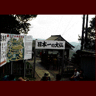

日本寺/千葉県鋸南町
千葉の数少ない観光地、鋸山。ここにもありました。日本一の大仏。
ロープウェイで山頂に登り、名物地獄覗き（絶壁の上にせりだしている覗き台）などでビビリながら山道を歩いていくと昭和44年再建の石造の大仏さんがデーンと座っている。なーんか屋外の広場みたいなところにいるので大きさがまるで感じられない。緊張感まるで無し。しかしここの面白さはその緊張感の無さなのだから仕方が無い。
この鋸山は関東最古の勅願所である日本寺の寺域なのだが、それと同時に古くから房州石の産地としても有名で、境内の所々に石切場の跡があり、古代の遺跡のような雰囲気が漂ってるところもある。
従ってこの地には多数の石工が居り、そんな人達が様々な石仏を大量に奉納しているのだ。百体観音、千五百羅漢などなどスケールはでかい。しかしなーんかイマイチぱっとしない。ましなのは採掘跡に半身彫りされた百尺観音くらいか。通天窟（しかしタイトルは皆すごいよね）などは外見はすごいんだけど中狭いし。とにかくこけ脅し系のものが多いのだ。
脱力必至。
で、この寺の本堂はどんなとこかと思いきや、昭和14年に焼失してしまい、現在復興に向けて懸命の努力を重ねている（パンフより）最中とか、ちゃちい仮本堂が建ってました。つまんない大仏造ってる余裕あるんなら、とっとと本堂でも造らんか、コラア！などと思いつつ山道を歩いて行くのでした。
1997.9.
珍寺大道場 HOME